RADIO NAVIGATOR WITH MAPS
The radio navigator module, located in the middle of the dashboard, includes:
- radio module with dual aerial, dual tuner;
- Audio CD and CD MP3 player;
- SD card reader;
- GPS module;
- independent navigation module with maps;
- 6.5" TFT colour monitor;
- interface with the controls on the steering wheel.
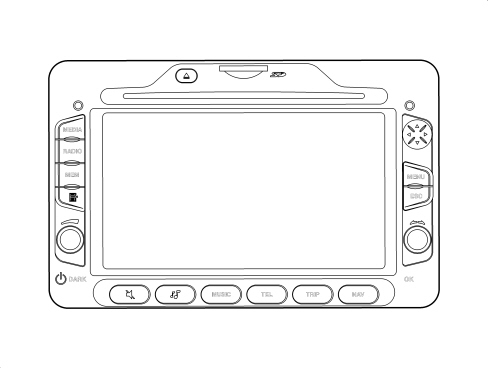

|
The RADIONAV system described below comes in two versions: - matched with the "basic" radio, there is no telephone management: the navigation functions are managed by the RADIONAV and shown by maps on the display. - matched with the "Blue&Me": in this case the RADIONAV manages the navigation and the Blue&Me manages the Media Player and Bluetooth telephone; on the "Blue&Me Nav" versions the additional SOS and Info functions are also managed using the buttons near the courtesy light. THIS LATTER CONFIGURATION IS KNOWN AS “INSTANT NAV” |
Example of main MENU screen:
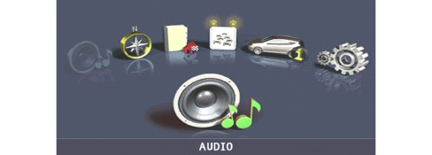
Audio module
General specifications:
- 5 predefined band graphic equalizer;
- easily operated menu for adjusting radio settings or any outside interfaces (Media Player);
- remote control from the steering wheel;
- speed-dependent volume control.
Radio tuner specifications:
- RDS
- RDS - TMC (Traffic Message Channel)
- EON (Enhanced Other Network)
- TA (Traffic Announcements)
Tuning on the following bands:
- USW (87.5-108 Mhz) (FM);
- MW (153-279 khz) (AM);
- LW (531-1602 khz) (AM);
Possibility of programming:
- 18 FM stations (6 of which can be memorised through autostore);
- 12 FM stations (6 of which can be memorised through autostore);
2 scan modes (brief playback of one station and automatic scan to the next):
- scan on the frequency band used and stations memorised.
- possibility of selecting programmes via PTY (on FM bands only).
- predefined sensitivity such as distant.
- List function which shows the list of all radio stations available
Example of screen with radio activated:
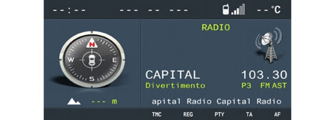
AUDIO SPECIFICATIONS:
- bass / treble
- fader / balance
- loudness
- hi-fi system active control
- 5 predefined equalizer curves:
- predefined (manufacturer''s equalizing);
- rock/jazz/classical/vocal
- soft mute
Cd rom reader
The radio navigators are equipped with a CD ROM reader capable of reading and managing:
- normal commercial audio CDs
- CDs with files in MP3 format.
Example of screen with CD Mp3 activated:
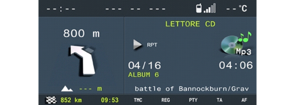
Audio CD specifications:
- motorized loading and ejection;
- TPM function (Track Program Memory);
- shuffle function;
- repeat;
- skip;
- pause / stop;
- CD naming: CD identification (20 max).
CD MP3 specifications :
- scan;
- repeat (one track or all);
- pause;
- skip;
- maximum number of MP3 tracks considered for each file 255 (if the number of MP3 files in a folder is more than this limit only the first 255 will be considered);
- list function which allows a list of all available tracks to be displayed.
Navigation module
Sd card reader
The radio navigator is equipped with an SD card reader that can read and manage SD cards using SPI technology containing the navigation maps.
There is a dedicated menu for the management of SD cards accessible from the configuration menu as "SD CARD MANAGEMENT".
|
|
The system recognises a new map SD-Card and allows initial use for a distance of approximately 1000 km. An activation code is needed for unlimited map SD-Card access. To obtain an activation code, call the NAVTEQ Call Center during office hours on the toll-free number shown on the SD-Card box and provide the following information: - - system serial code: this comprises 11 alphanumerical characters, that can be obtained from the SD CARD MANAGEMENT configuration menu under the item SYSTEM SERIAL NUMBER; - map version and license number, if appliance, in the map SD-Card box; - vehicle data and personal data for further activation functions. With this information, the NAVTEQ Call Center will provide a 16 character activation code. Enter the code in the “SD CARD MANAGEMENT”, ““MAP LICENCE ACTIVATION” item. |
Each map can only be used by the equipment for which it has been registered; therefore if you try and insert the SD card in another piece of equipment, the software will not be accepted.
System operation
The possible states of the radio navigator from the point of view of power supply and operation in general are:
- off status (OFF)
- normal status
- stand-by status.
Operation also depends on the “system configuration”.
The system configuration remembers what functions the user has selected as activated (what is meant by function is: tuner, CD, Media Player, etc.).
- OFF status: all the radio navigator functions are disabled and the various hardware modules are not supplied.
- Normal status: in the normal status the radio navigator is fully activated and all the system functions are managed in accordance with the system configuration. The internal modules are operational, as are the internal communication lines.
On leaving this status the system configuration is memorised; later on, it is restored when returning to normal status (except for dark on/off which is always set at off so that the display will always be activated).
- Stand-by status: in this status the radio navigator is activated but appears to the user as if it is in the off status; in any case the only internal module that can work fully is network communication.
Switching on:
The user can turn the system on (move from off status to normal status) by pressing the ON/OFF button irrespective of the key status.
If the key is operated (+ key activated at the first key position) with the system OFF, the radio navigator continues with the anti-theft procedure (exchange of codes with the Body Computer node) to then reach normal status (obviously the typical functions will be available if and only if the authentication has been successful otherwise it will go to stand-by).
Off:
the user can turn the system off in various ways which depend on the actual system status.
Normal status:
If the key is removed and there is neither a phonecall or a Service call in progress, the system switches off (in other words moves to the off status) (obviously the system configuration and backup data are saved first).If a phonecall with the mobile phone connected to the Blue&Me or a Service Call with the telephone incorporated in the Blue&Me is in progress, there will be a time out (20 mins operation without the key and without any intervention by the user on the buttons on the front panel or the steering) before the radio navigator switches off once the call is over.
If the system is in the normal status with the key off, it may switch off for the following reasons:
- automatically when the above mentioned time out has elapsed.
- through the intervention of the user pressing the on/off button.
Stand-by status:
Switching off (move to off status) takes place when there is no key signal (+ key not activated).
Go to stand-by (apparent shutdown):
It is possible to move from normal status to stand-by status (an operation which seems like switching off to the user but, in reality, leaves the radio navigator activated and only prevents usage) when the user presses the ON/OFF button but the key is activated.
It is possible to return from this status to normal by pressing the ON/OFF button.
Anti-theft function
The radio navigator remains automatically locked if there is no connection to the CAN: in this case it is necessary to enter the master code manually to allow authentication with the body computer and consequently operation.
Also see description for PROXI function
See descriptions 5505 INSTRUMENT/GAUGE ELECTRICAL CIRCUITS
Languages available
The languages available both for the written messages (menu) and vocal navigation messages are:
- Italian
- French
- English
- German
- Spanish
- Dutch
- European Portuguese
Navigation
The radio navigator makes location of the vehicle and route guidance possible.
Location takes place via:
- GPS satellite location;
- Dead reckoning;
- Map matching.
GPS location: this refers to location through the reception of GPS signals; at least three satellites should be received via the dedicated aerial mounted on the vehicle roof. GPS location gives precision of less than 20 metres (in normal operating conditions).
Dead reckoning; this refers to location carried out by integrating the following signals: vehicle direction, speed and direction of travel (supplied by dedicated on board sensors). This is designed to guarantee the position if there are no GPS signals (tunnels, covered areas, etc.).
Map matching: this refers to the comparison of the route taken by the vehicle and the territory map conditions. In this way the effective vehicle position data is refined by connecting it to road maps.
The navigation module receives the location data and direction progress and variation information from the vehicle sensors.
This data is accumulated and processed by a dedicated algorithm which, also taking into consideration the current position obtained from the GPS satellites, allows the calculation of an estimated point (location of the vehicle).
Route guidance
The navigation module is capable of carry out all information extraction, management and processing activities for guiding the driver to the destination they have set.
This chiefly involves:
- route calculation;
- calculating the route between the current position and the destination;
- recalculating the route in case of deviation from the current route;
- calculating an alternative route;
- identifying a service centre along the route;
- calculating the distance to the destination;
- identifying junctions along the route;
- identifying manoeuvres at junctions along the route (and graphic and voice instructions for the user);
- calculating the distance to the next junction where the user has to make a turn;
- junction zoom.
Acquiring RDS-TMC traffic information from the radio module (the navigator module receives traffic information from the radio module via RDS-TMC messages in geographical areas where they are available). In any case, the information referred to is only textual.
Map display
If the navigator function is active, the user can choose to have a map of the territory with the following features shown on the display:
- possible scales: from 1:10.000 to 1:20.000.000;
- possibility of north up or heading up depending on the map scale set;
- representation of certain areas (parks, expanses of water, etc.);
- names of towns;
- POI symbols (categories: restaurants, hotels, service stations, car parks);
- BIRD VIEW function (bird''s eye view of maps).
Method of entering destination and calculation criteria
Address of destination: consists of providing the system with the following place details: Locality, Road and Number.
Junction (2nd way); allows the point to be defined as the junction between 2 roads. the first is defined as in the previous case (district, toponym), the second road is selected from a list of roads that cross the first one in the same district.
Points of interest (POI) : this consists of typing in the following sequence of information in order to select somewhere (depending on some information being obtained).The P.O.I. can be selected on the basis of:
- Name
- Proximity to current position
- Proximity to destination
- Proximity to general address.
Example of screen for entering address:
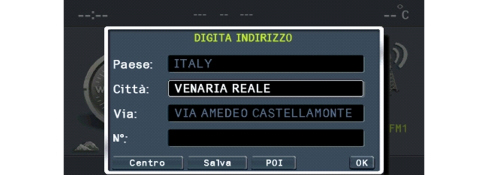
The system calculates the optimum route for reaching the place or places set and a route with one of the following priorities can be set:
- quickest
- shortest
- best distance/time ratio
- motorway yes/no
- ferries yes/no
- RDS TMC yes/no.
Possible information from radio navigator during navigation
Example of screen for NAV application during navigation:
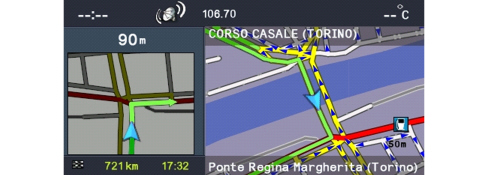
Car location information:
- name of road and area;
- the name of the road and the district appear constantly in the navigation window.
Traffic information: starting with the RDS-TMC information described previously, the user is supplied with the following traffic information:
- symbol on map: the system can be configured to display the symbols on the map corresponding to traffic situations in progress; only some types of situations are displayed;
- explanatory test: an explanatory text with each event. The list of types of events is accessed from the menu and choosing the type gives access to the list of all corresponding events.
Route guidance: voice messages; they are part of the general set of radio navigator voice messages, prerecorded in a female voice. Predefined pictograms give summary information of the next type of manoeuvre.
Junction zoom function: the system can be configured to show the junction, just before a manouevre, greatly enlarged with explicit instructions on the route to take.
Atlas function: this function makes it possible to use digital maps like a normal road map.
Destination organizer
The location can be memorised in a personal destination organizer in order to easily recalled later on.
The system allows a descriptive name for the location.
The destination organizer function is accessible from the main menu:
My car set up function
The system allows the radio navigator and vehicle set up to be operated.
The changes selected by the user are "proposed" to the panel.
The menu makes the following main groups of functions available:
The display configuration makes it possible to:
- select the display lighting mode;
- set the display brightness;
- select the units of measurement.
The volumes of the following can be set:
- Voice commands;
- Panel buzzer;
- Panel buttons.
Vehicle parameters configuration: makes it possible to configure the behaviour of some vehicle devices (if the vehicle is not fitted with the special equipment, the corresponding item cannot be selected):
- Speed limit;
- Door locking when moving;
- Information repetition to panel;
- DRL activation;
- Courtesy lights activation;
- Dusk sensor sensitivity.
Time&Date: the date and the time can be set.
Language: the language for the device can be changed.
SD Card management: contains some items relating to the removal and management of the SD card.
SD card safe removal: allows the procedure for the safe removal of the SD card to be activated.
Navigator serial number: allows the display of the radio navigator serial number necessary for the map activation procedure.
Map license activation: selecting this item gives access to the screen for entering the map activation code.
Map license status: displays the map information.
Vehicle info
The device allows the display of programmed assistance parameters and vehicle settings.
The menu makes the following functions available:
Programmed assistance expiry info
Function status: a screen that summarises the status of the vehicle settings, namely:
- Speed limit;
- Buzzer volume;
- Automatic door/boot locking;
- Trip and navigation repetition in the instrument panel.
Trip
The device makes it possible to display (and, if necessary, reset) the vehicle trip parameters.
Example of TRIP screen
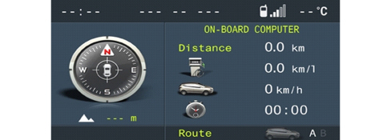
By turning the right knob it is possible to look at 3 information screens:
- Trip A;
- Trip B;
- Instant information.
The menu makes the following functions available:
- Reset Trip A
- Reset Trip B
Radionav contents available in association with blue&me
When the radio navigator is associated with Blue&Me the following new contents and functions become available:
Mediaplayer
The radio navigator reproduces musical tracks memorised on a digital device through the on board audio and stereo system: USB drive, MP3 player.
When the device is connected to the USB socket, the radio navigator display shows that the Media Player is activated and the music information is available in the radio function.
By using the controls at the front of the radio navigator it is possible to skip to the next/previous track (left and right arrows) and change the search method (up and down arrows).
The dedicated menu accessible in the radio function (or from the main menu) can be used for Media Player settings and for selecting the navigation mode between tracks that can be set by type, album, artist, playlist.
Telephone
When the vehicle is equipped with Blue&Me, pressing the TEL button gives the radio navigator access to the telephone screen that summarises the information linked to the telephone connected via Bluetooth.
The settings for calls in progress can be changed using the dedicated menu:
- change call (if two calls are activated),
- redirect call,
- deactivate microphone,
- end call.
When the telephone is connected and the Blue&Me privacy function is disabled, the radio navigator will show pop-up information relating to a new SMS being received and the arrival/forwarding of a call allowing the user to accept/refuse.
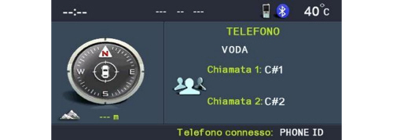
Example of screen for TEL application during a conference call.
Front view
The front section of the radio navigator contains numerous buttons and two rotary selectors (in the form of a ring nut and a button).
Some controls perform multiple functions, according to the system operating conditions active at that time.
The activation of the function selected is controlled, in some cases, by how long the button is pressed (short or long press) as described in the table below.
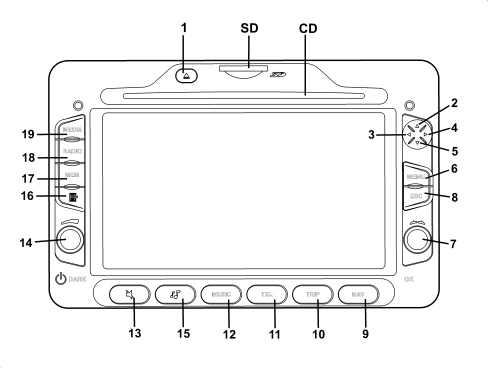
1 - CD ejection
2 - Tuner: "forwards" frequency; CD or MP3 folder: maps "up"
3 - Tuner: "backwards" frequency search: CD or MP3 previous selection: maps "left"
4 - Tuner: "forwards" frequency search; CD or MP3 selection: maps "right"
5 - Tuner: "backwards" frequency; CD or MP3 previous folder: maps "up"
6 - Main menu
7 - Ring nut: change selection in display - button: confirm selection (OK)
8 - Exit from selection in progress; switching off of system (pressing for more than 8 seconds)
9 - Nav mode
10 - Trip mode
11 - Blue&Me telephone function (if present)
12 - Audio module
13 - Mute/Pause
14 - Ring nut: volume adjustment - button: switch on/off
15 - Audio adjustments
16 - Tuner: list of stations; CD or MP3: list
17 - Stations programmed
18 - In TUNER mode: band switching, autostore function
19 - In TUNER mode switches the last MEDIA (CD, Blue&Me, etc.) selected
SD housing for SD card
- CD: housing for CD
Controls on the steering wheel
The controls for the main radio navigator functions are replicated on the steering wheel to make things easier.
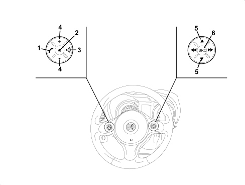
1 - TEL telephone button
2 - MUTE function button
3 - Voice recognition button (Blue & Me)
4 - + and - buttons: volume adjustment
5 - + and - SCAN buttons:
6 - SOURCE button
Rear view
The rear view of the radio navigator with the connectors highlighted is illustrated below.
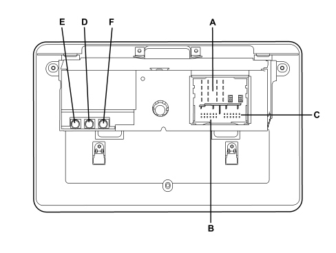
Connector A
|
PIN |
SIGNAL |
|
1 |
Right rear speaker (positive) |
|
2 |
Right front speaker (positive) |
|
3 |
Left front speaker (positive) |
|
4 |
Left rear speaker (positive) |
|
5 |
Right rear speaker (negative) |
|
6 |
Right front speaker (negative) |
|
7 |
Left front speaker (negative) |
|
8 |
Left rear speaker (negative) |
|
9 |
Outside display power supply (preparation) |
|
10 |
B CAN B (high) |
|
11 |
Outside aerial power supply, Mute signal for hi fi audio amplifier control unit (preparation) |
|
12 |
+ Battery power supply |
|
13 |
B CAN A (low) |
|
14 |
Power supply (positive signal) for hi-fi audio system enablement |
|
15 |
Earth reference for outside display (preparation) |
|
16 |
Chassis earth |
Connector B
|
PIN |
SIGNAL |
|
1 |
D+ signal (USB differential data signal) from USB port (N.C.) |
|
2 |
Reference earth (USB gnd) for USB port (N.C.) |
|
3 |
Reference earth for hands-free microphone signal screen (N.C.) |
|
4 |
Aux R signal (MP right) from Blue&Me control unit |
|
5 |
Outside display backlighting control pwm signal (N.C.) |
|
6 |
Video signal (CVBS signal) from outside TV camera (N.C.) |
|
7 |
D- signal (USB differential data signal) from USB port (N.C.) |
|
8 |
Power supply (USB device power supply) for USB port (N.C.) |
|
9 |
Signal from hands-free microphone (N.C.) |
|
10 |
Aux L signal (MP left) from Blue&Me control unit |
|
11 |
Aux gnd reference earth (MP gnd) from Blue&Me |
|
12 |
Reference earth (CVBS gnd) for video signal from outside TV camera (N.C.) |
Connector C: not connected
Connector D : FM1 aerial coaxial cable
Connector E : FM2 aerial coaxial cable
Connector F : GPS aerial coaxial cable